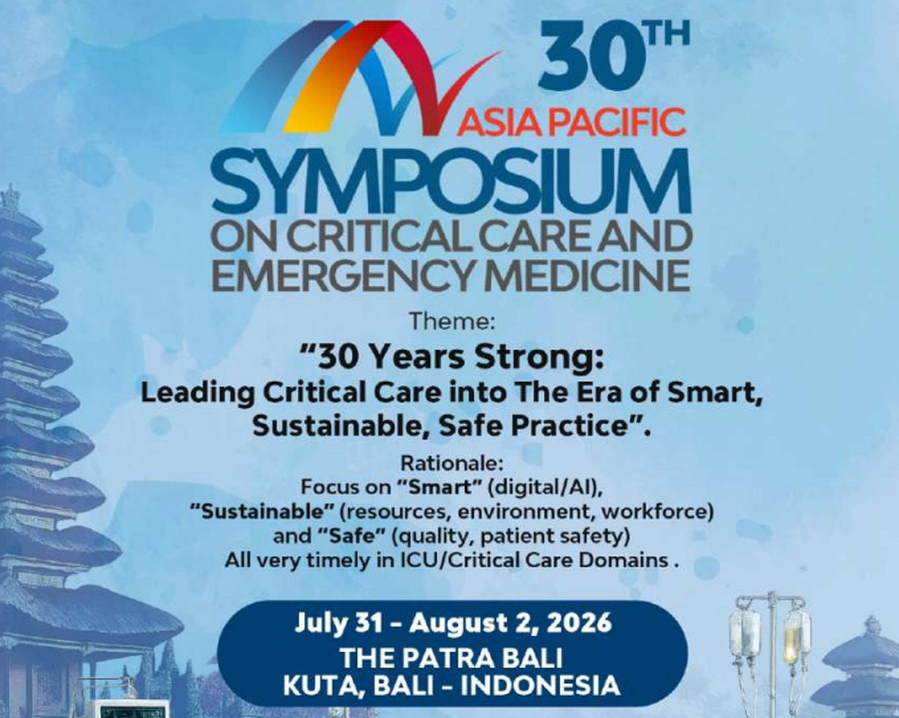

30 Years, 40 Credit Points: Asia Pacific Critical Care Convenes in Bali
The 30th Asia Pacific Symposium on Critical Care and Emergency Medicine (APSCCEM) 2026 arrives at The Patra Bali, Kuta, this July 28 – August 2 — three decades on from its first edition, and carrying a programme that reads like a map of where emergency medicine is heading: generative AI at the bedside, teletrauma consultation, drone-assisted response, and interdisciplinary collaboration in humanitarian emergencies.

The 2nd Announcement of APSCCEM 2026, themed "30 Years Strong: Leading Critical Care Into the Era of Smart, Sustainable, Safe Practice." Image: symposium organising committee.
The Indonesian Society of Emergency Medicine (Perhimpunan Kedokteran Gawat Darurat Indonesia, PKGDI), together with Dorrington Medical Associates, will hold The 30th Asia Pacific Symposium on Critical Care and Emergency Medicine (APSCCEM) 2026 at The Patra Bali in Kuta. The annual symposium marks a three-decade run as one of the largest scientific forums for critical care and emergency medicine in the Asia Pacific region.
This year's theme — "30 Years Strong: Leading Critical Care Into the Era of Smart, Sustainable, Safe Practice" — frames the anniversary around a transformation the field is living through in real time: the shift from basic physiological monitoring toward AI-driven analytics, precision diagnostics, and regenerative strategies.
Six Days in Kuta
The programme runs across three overlapping blocks:
- Pre-Symposium Workshops & Courses: July 28–30, 2026
- Main Symposium: July 31 – August 2, 2026
- Post-Symposium Workshops & Courses: August 1–2, 2026
The event is chaired by Dr. Tri Wahyu Murni, President of PKGDI, as Chair of the Organising Committee, with Prof. Joseph Varon, President of Dorrington Medical Associates (Houston, Texas, US), leading the Scientific Committee. Speakers and scientific committee members come from Indonesia, the United States, Singapore, Malaysia, India, Qatar, South Korea, Taiwan, New Zealand, Bangladesh, and Mexico.
From Generative AI to Green Ambulances
The scientific programme combines plenary lectures, interactive simulations, and hands-on workshops. Among the headline topics:
- Generative AI in Critical Care: Turning Predictions into Actionable Decisions
- Artificial Intelligence Role in Procedural Facilitation & Cognitive Analysis in ER & ICU Care
- Teletrauma: Remote Surgical Consultation and Decision Support
- Drone-Assisted Emergency Response Systems
- Updates on CPR — Wearables, Drones and ECMO
- Green Ambulance Concept: Sustainability in EMS
- Ethical Dilemmas in Managing Advanced Respiratory Infections
- Interdisciplinary Collaboration in Humanitarian Emergencies
For humanitarian practitioners, the last item is the one to watch: a dedicated slot on how clinical teams, field responders, and coordination structures work together when emergencies outgrow any single discipline — on a programme otherwise dominated by the technology reshaping intensive care.
Forty Credit Points
Alongside the scientific sessions, the symposium offers a series of certified workshops — Basic Intensive Care Course, Basic and Advanced Mechanical Ventilation, Ultrasound Life Support, Procedural Sedation, Fluid Therapy, and Toxicology — carrying a combined total of up to 40 SKP (Satuan Kredit Profesi, Indonesia's professional credit points). That makes the event directly relevant for Indonesian physicians and health workers who need credit points for renewing their registration certificate (STR), not just for the scientific content.
Abstracts and Registration
The committee opened a call for abstracts for oral presentations, posters, and case reports, with submissions selected on quality and originality by the Scientific Committee; the submission window closed on June 30, 2026. Registration runs on three fee tiers: Early Bird (before March 31, 2026), Normal (April 1 – June 30, 2026), and On-Site (from July 1, 2026) — meaning participants registering now fall under the on-site scheme.
Registration and further information are available at www.criticalcarebali.com, or through the secretariat, Neo Quality Organizer, Komplek Perhubungan Udara Blok B9, Rawasari, Central Jakarta — Ms. Rani (+62 813-1822-0387) / Mr. Bayu (+62 813-1081-0555).
2nd Announcement — The 30th Asia Pacific Symposium on Critical Care and Emergency Medicine 2026 (organising committee)
Official website: criticalcarebali.com
Image: APSCCEM 2026 organising committee announcement material.
Conference announcements rarely say much about a field's direction; thirty years of programme evolution do. APSCCEM's 2026 agenda puts generative AI, drones, teletrauma, and sustainability on the same stage as ventilation and toxicology workshops — a signal that the tools of critical care are changing faster than the training pipelines that certify people to use them. That is precisely why the 40 SKP matters as much as the plenaries: in Indonesia, capacity in emergency medicine is built through exactly this kind of accredited, hands-on professional development. And for the humanitarian sector, one session title deserves attention beyond the ICU: interdisciplinary collaboration in humanitarian emergencies, discussed not at an aid conference but at a clinical one. The conversation between critical care and humanitarian response is happening — the question is whether field practitioners will be in the room.
Indonesian Summary
PKGDI bersama Dorrington Medical Associates menyelenggarakan The 30th Asia Pacific Symposium on Critical Care and Emergency Medicine (APSCCEM) 2026 di The Patra Bali, Kuta — menandai tiga dekade sebagai salah satu forum ilmiah kedokteran kritis dan gawat darurat terbesar di Asia Pasifik. Tema tahun ini: "30 Years Strong: Leading Critical Care Into the Era of Smart, Sustainable, Safe Practice". Jadwal: pre-symposium workshop 28–30 Juli, simposium utama 31 Juli–2 Agustus, post-symposium workshop 1–2 Agustus 2026. Dipimpin Dr. Tri Wahyu Murni (Presiden PKGDI) dan Prof. Joseph Varon (Dorrington Medical Associates, Houston) dengan pembicara dari 11 negara. Topik unggulan mencakup AI generatif di perawatan kritis, teletrauma, sistem respons darurat berbasis drone, green ambulance, hingga kolaborasi interdisipliner dalam kedaruratan humanitarian. Tersedia workshop bersertifikat (ventilasi mekanik, ultrasound life support, toksikologi, dll.) dengan total hingga 40 SKP untuk perpanjangan STR. Batas abstrak 30 Juni 2026 (sudah ditutup); pendaftaran kini masuk skema on-site. Info: www.criticalcarebali.com atau Sekretariat Neo Quality Organizer, Rawasari, Jakarta Pusat — Ms. Rani (+62 813-1822-0387) / Mr. Bayu (+62 813-1081-0555).